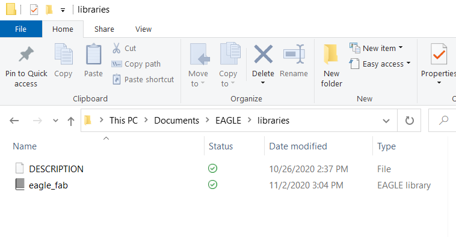
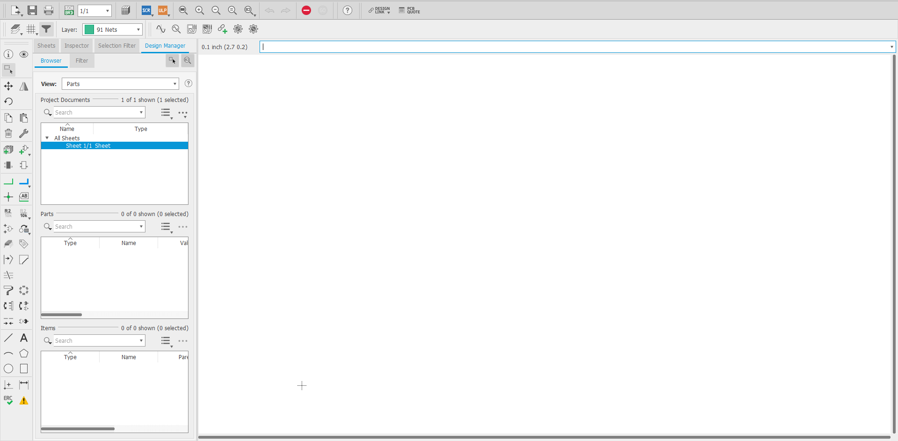
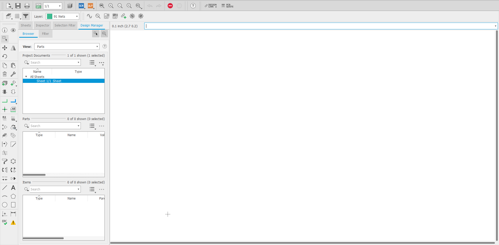
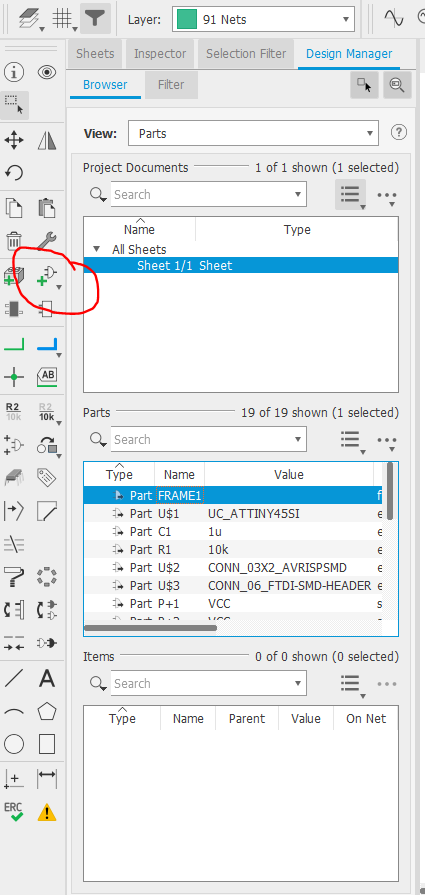
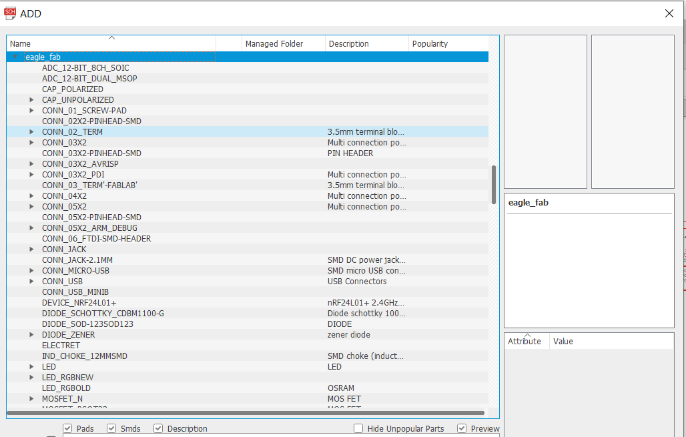
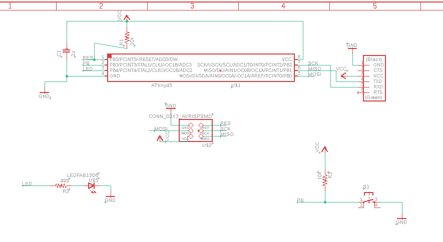
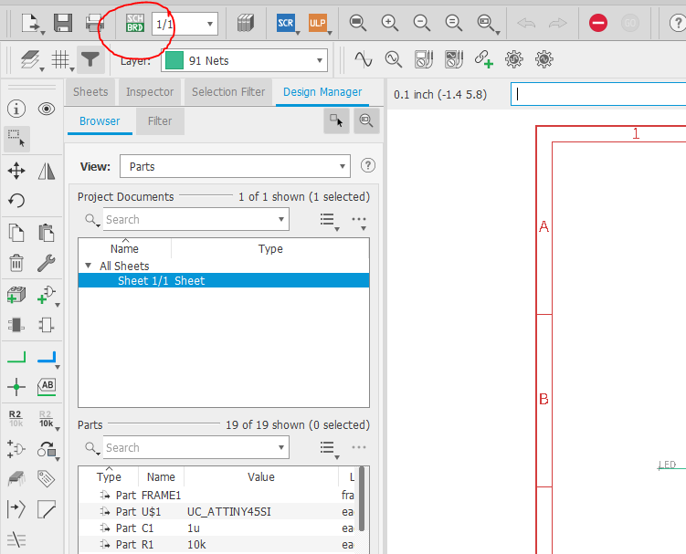
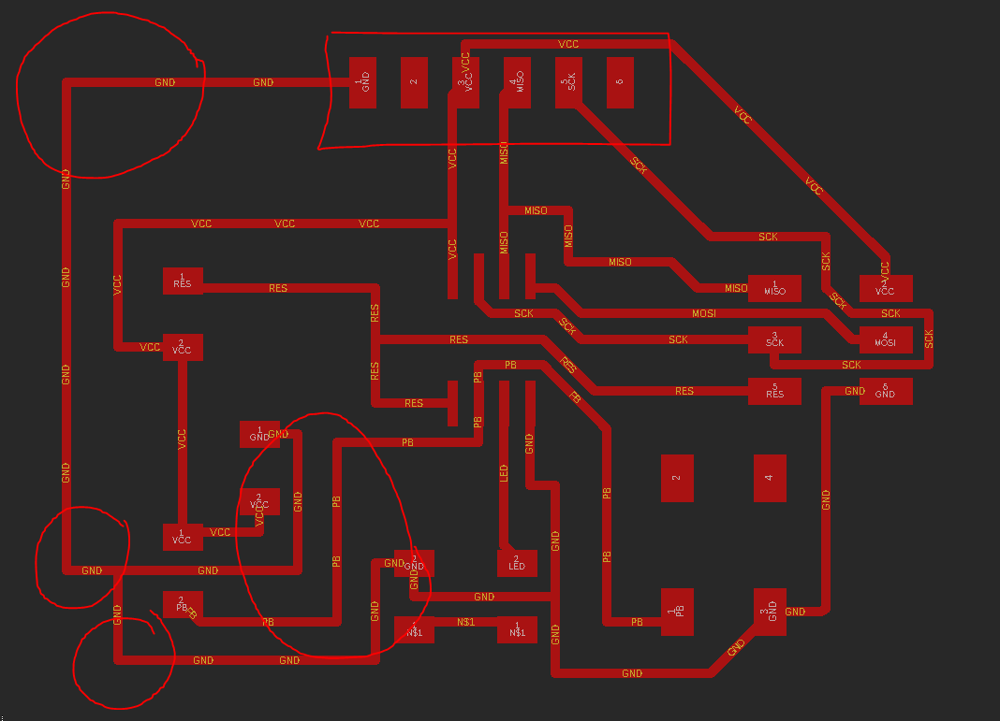
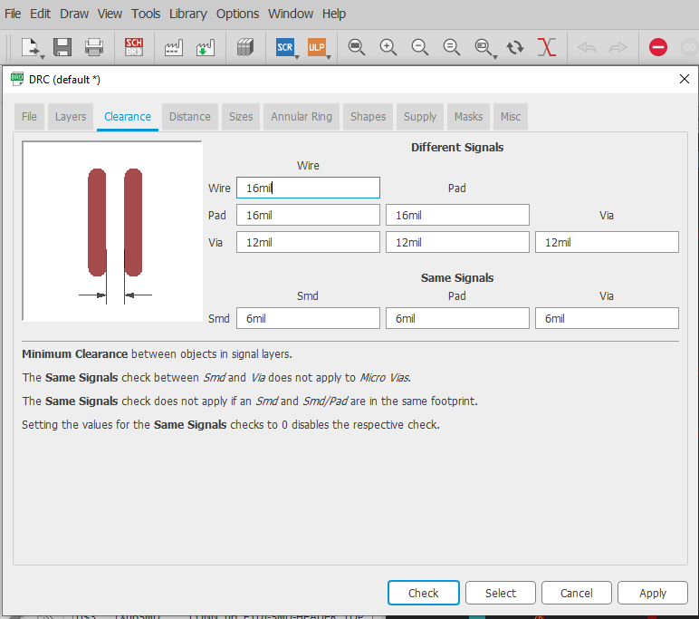
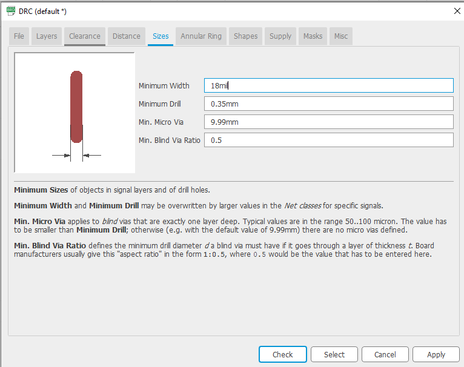

Electronics in Further Fab Lab is a 3 part process on learning how to Design, Create and Programme our own Printed Circuit Board.
In Electronics Design, we are tasked to design our own PCB, but as an introduction to making our own board, all of us were tasked to make the AT Tiny85 board under the guidance of Mr Chew.
To start designing, we first need the appropriate software, for this demostration we are using AutoDesk Eagle.
Before starting on designing, we are also required to get the required components for the board we are making. This file can be downloaded from here. AFter entering the website, click eagle followed by 'fab.lbr' to download the required components.

After downloading, copy all the downloaded files to Documents->Eagles->Libraries. After this, you should be set to start creating the ATTiny 85 board.
From here on, you can truly start designing your own PCB. First, enter Eagle, go to Control Panel and under Libraries, select the file that you have downloaded and click use. This will allow you to use the library and start designing.

Click File >> New >> New Schematic and it will lead you to a new blank schematic page, this is where you will design the electronics and its components and make sure everything is linked and connected properly.
 

From here, we will start by adding components and slowly forming the circuit. Firstly we will add in the sheet followed by the compoennts. Since we have the Fab library installed, most of our required components can be found inside the library that we downloaded.
 - List of components are(THose with fab by the name have a number 1206 by their components name):
- Tiny 45(85) Microchip x1
- AVR ISP SMD x1
- FTDI Header x1
- 6mm Button x1
- Fab 1u Capaciter x1
- Ground x5
- VCC x4
- Fab LED x1
- Fab 10kohms Resistor x2
- Fab 499ohms Resistor
After finding all of these compoennts and adding them to your sheet, time to connect them. To connect them, there is 2 ways, one is to use the traditional method of wiring everything together but that causes alot of mess to your circuit, so the recommended way would be to name the wires, and cables with the same name would be connected together by Eagle automatically. The end circuit should looks something like this.
Next will be where we prepare our traces and dimensions for milling out the PCB. First, switch/generate the board and its components. From here, drag and place each individual components so that they form up nicely .Roughly in a shape of a small rectangle. The only thing one needs to take note is that the connector pin should be placed on the edge of the board for easy conneciton in the future.After dragging and placing,auto route the tracks>start. Selecting only the track with 100% . If no 100% on the first try, try moving the components around more with the intention of reducing reducing lenght of connection and making cables look cleaner by having lesser overlaps. After selecting a 100% adjust the cables given so that most of them for a 90degree angle( most eficient for milling), space out cables and move components slightly if necessary. This step should be done until all cables have enough space on their own . After doing that check for errors and change DRC to the following specification
   After getting an acceptable traces with 100% now is time to draw the outline for our board. First select Draw>Line, from there select the different line selections and select the one that looks like a L shape, this will allow you to draw 90degree lines for the outline. Next, in layers, select Milling and change the thickness to 30. After these, you can start drawing. Your goal will be to contain all the traces and components of your board.


After all of these are done, next would be the easy part, to export our files as image and prepare for Milling! Go to View>layers untick everything except needed traces and export>image>Res 1000> Tick Monochrome Next untick everything leaving milling line an drepeate the same thing until you get a png image of both traces and outline.